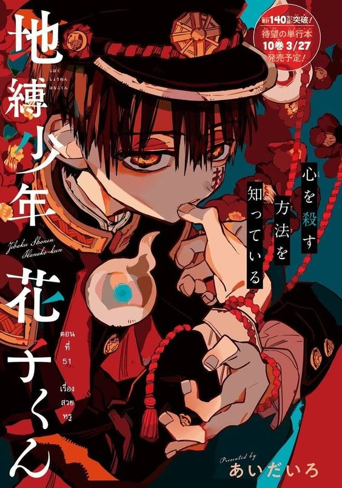

Hanako Kun
“Hanako-san, Hanako-san... are you there?“ At Kamome Academy, rumors abound about the school’s Seven Mysteries, one of which is Hanako-san. Said to occupy the third stall of the third floor girls’ bathroom in the old school building, Hanako-san grants any wish when summoned. Nene Yashiro, an occult-loving high school girl who dreams of romance, ventures into this haunted bathroom... but the Hanako-san she meets there is nothing like she imagined! Kamome Academy’s Hanako-san... is a boy!
